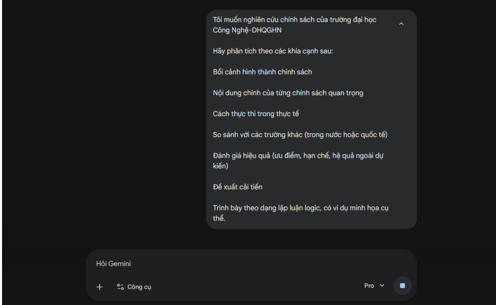
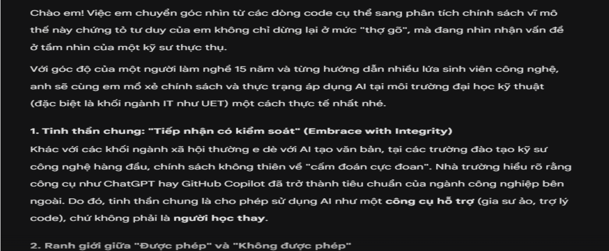
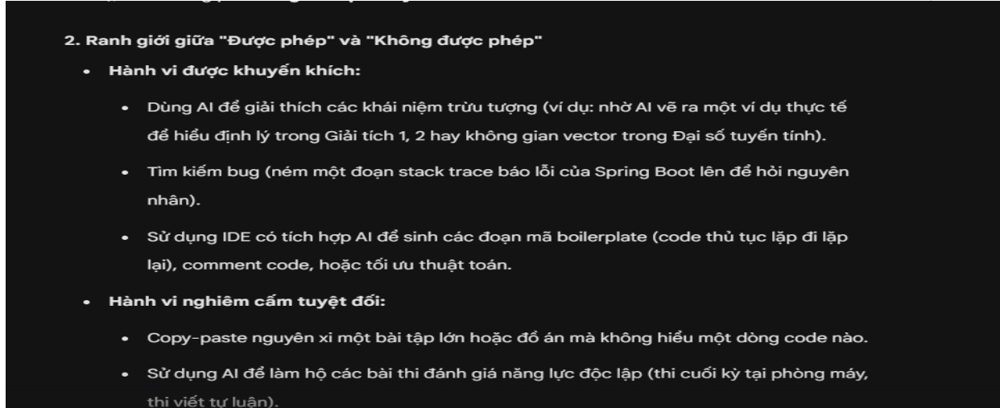
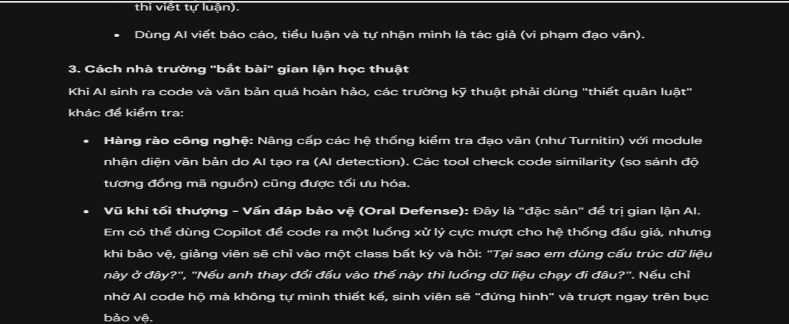
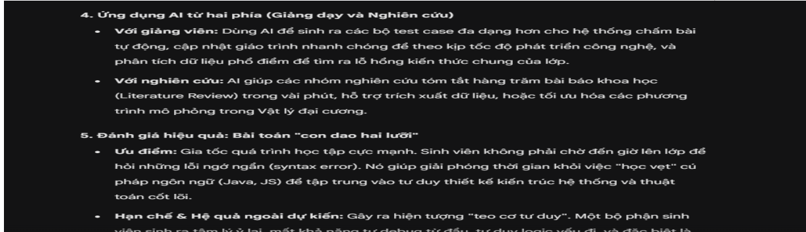
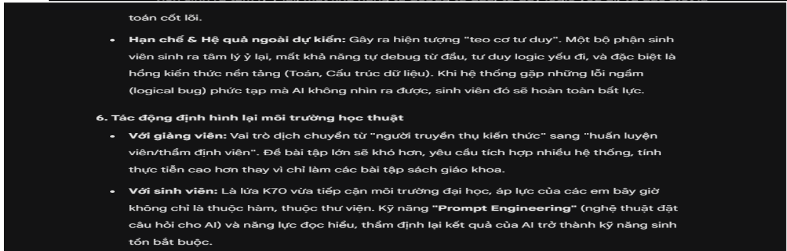
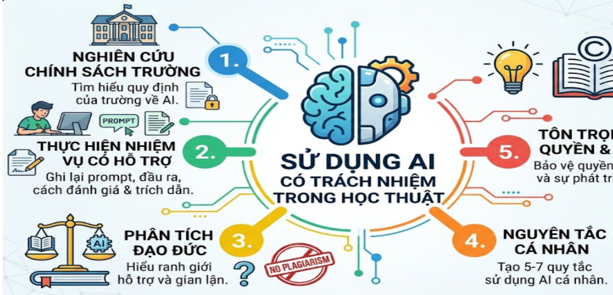

Bài 6: Đạo đức & Trách nhiệm khi sử dụng AI
Sinh viên: Triệu Văn Duy — Mã SV: 25020090
I. Môi trường học thuật và AI: "Tiếp nhận có kiểm soát"
Khác với các khối ngành xã hội thường e dè với AI tạo văn bản, tại các trường đào tạo kỹ sư công nghệ hàng đầu, chính sách không thiên về "cấm đoán cực đoan". Nhà trường hiểu rõ rằng công cụ như ChatGPT hay GitHub Copilot đã trở thành tiêu chuẩn của ngành công nghiệp bên ngoài. Do đó, tinh thần chung là cho phép sử dụng AI như một công cụ hỗ trợ (gia sư ảo, trợ lý code), chứ không phải là người học thay.
1. Ranh giới giữa "Được phép" và "Không được phép"
Hành vi được khuyến khích:
- Dùng AI để giải thích các khái niệm trừu tượng (ví dụ: nhờ AI vẽ ra một ví dụ thực tế để hiểu định lý trong Giải tích 1, 2 hay không gian vector trong Đại số tuyến tính).
- Tìm kiếm bug (ném một đoạn stack trace báo lỗi của Spring Boot lên để hỏi nguyên nhân).
- Sử dụng IDE có tích hợp AI để sinh các đoạn mã boilerplate (code thủ tục lặp đi lặp lại), comment code, hoặc tối ưu thuật toán.
Hành vi nghiêm cấm tuyệt đối:
- Copy-paste nguyên xi một bài tập lớn hoặc đồ án mà không hiểu một dòng code nào.
- Sử dụng AI để làm hộ các bài thi đánh giá năng lực độc lập (thi cuối kỳ tại phòng máy, thi viết tự luận).
- Dùng AI viết báo cáo, tiểu luận và tự nhận mình là tác giả (vi phạm đạo văn).
2. Cách nhà trường "bắt bài" gian lận học thuật
- Hàng rào công nghệ: Nâng cấp các hệ thống kiểm tra đạo văn (như Turnitin) với module nhận diện văn bản do AI tạo ra (AI detection). Các tool check code similarity (so sánh độ tương đồng mã nguồn) cũng được tối ưu hóa.
- Vũ khí tối thượng - Vấn đáp bảo vệ (Oral Defense): Đây là "đặc sản" để trị gian lận AI. Em có thể dùng Copilot để code ra một luồng xử lý cực mượt cho hệ thống đấu giá, nhưng khi bảo vệ, giảng viên sẽ chỉ vào một class bất kỳ và hỏi: "Tại sao em dùng cấu trúc dữ liệu này ở đây?", "Nếu anh thay đổi đầu vào thế này thì luồng dữ liệu chạy đi đâu?". Nếu chỉ nhờ AI code hộ mà không tự mình thiết kế, sinh viên sẽ "đứng hình" và trượt ngay trên bục bảo vệ.
3. Ứng dụng AI từ hai phía (Giảng dạy và Nghiên cứu)
- Với giảng viên: Dùng AI để sinh ra các bộ test case đa dạng hơn cho hệ thống chấm bài tự động, cập nhật giáo trình nhanh chóng để theo kịp tốc độ phát triển công nghệ, và phân tích dữ liệu phổ điểm để tìm ra lỗ hổng kiến thức chung của lớp.
- Với nghiên cứu: AI giúp các nhóm nghiên cứu tóm tắt hàng trăm bài báo khoa học (Literature Review) trong vài phút, hỗ trợ trích xuất dữ liệu, hoặc tối ưu hóa các phương trình mô phỏng trong Vật lý đại cương.
4. Đánh giá hiệu quả: Bài toán "con dao hai lưỡi"
- Ưu điểm: Gia tốc quá trình học tập cực mạnh. Sinh viên không phải chờ đến giờ lên lớp để hỏi những lỗi ngớ ngẩn (syntax error). Nó giúp giải phóng thời gian khỏi việc "học vẹt" cú pháp ngôn ngữ (Java, JS) để tập trung vào tư duy thiết kế kiến trúc hệ thống và thuật toán cốt lõi.
- Hạn chế & Hệ quả: Gây ra hiện tượng "teo cơ tư duy". Một bộ phận sinh viên sinh ra tâm lý ỷ lại, mất khả năng tự debug từ đầu, tư duy logic yếu đi, và đặc biệt là hổng kiến thức nền tảng. Khi hệ thống gặp những lỗi ngầm phức tạp mà AI không nhìn ra được, sinh viên đó sẽ hoàn toàn bất lực.
5. Tác động định hình lại môi trường học thuật
- Với giảng viên: Vai trò dịch chuyển từ "người truyền thụ kiến thức" sang "huấn luyện viên/thẩm định viên". Đề bài tập lớn sẽ khó hơn, yêu cầu tích hợp nhiều hệ thống, tính thực tiễn cao hơn.
- Với sinh viên: Kỹ năng "Prompt Engineering" (nghệ thuật đặt câu hỏi cho AI) và năng lực đọc hiểu, thẩm định lại kết quả của AI trở thành kỹ năng sinh tồn bắt buộc.






II. Phân tích các vấn đề đạo đức liên quan đến việc sử dụng AI
1. Ranh giới giữa hỗ trợ hợp lý và gian lận học thuật
Ranh giới này thực chất rất mỏng manh và thường được quyết định bởi "sự nỗ lực nhận thức".
- Hỗ trợ hợp lý: Khi em vứt một đoạn stack trace báo lỗi
NullPointerException dài loằng ngoằng lên AI để hỏi "Đoạn này lỗi do đâu, giải thích nguyên lý giúp tôi". AI đóng vai trò như một người mentor gỡ rối, em vẫn phải tự tay sửa code và hiểu được bản chất.
- Gian lận học thuật: Khi em ra lệnh "Viết cho tôi toàn bộ logic tính toán đấu giá trong class AuctionService" rồi copy/paste y nguyên nộp cho giảng viên mà không hiểu nổi tại sao luồng dữ liệu lại chạy như thế. Đây là hành vi tước đoạt cơ hội học tập của chính mình và lừa dối hệ thống.
2. Vấn đề về quyền sở hữu trí tuệ và trích dẫn
Trong giới học thuật, sự minh bạch là tối thượng. Đoạn code, ý tưởng, hay đoạn văn do AI sinh ra không thuộc quyền sở hữu cá nhân của em.
- Nếu dùng AI để sinh ra một thuật toán phức tạp và mang đi nộp đồ án, việc không khai báo tương đương với đạo văn (Plagiarism).
- Trong thực tế, giới kỹ sư giải quyết việc này bằng cách comment rõ ràng trong mã nguồn. Ví dụ: // Khối logic xử lý concurrency này được gợi ý bởi GitHub Copilot và đã được tinh chỉnh lại. Nó thể hiện sự chuyên nghiệp và tôn trọng chất xám.
3. Tác động đến quá trình học tập và phát triển kỹ năng
Việc lạm dụng AI tạo ra một thế hệ "thợ gõ" có ảo giác về sự hiểu biết. Khi nhìn AI giải quyết bài tập hoặc sinh ra một đoạn code hoàn hảo trong 3 giây, não bộ tiết ra dopamine tạo cảm giác thỏa mãn y như tự mình làm được. Hậu quả là kỹ năng tư duy phản biện (Critical Thinking) và khả năng đối mặt với sự bế tắc (tố chất quan trọng nhất của lập trình viên) bị thui chột.

III. Bộ nguyên tắc cá nhân: "Sử dụng AI có trách nhiệm"
Để không biến thành "nô lệ" của công cụ, đây là bộ quy tắc thép trong suốt quá trình học tập và làm việc:
- 1. Luật 15 phút (The 15-Minute Struggle): Khi gặp một bug khó, bắt buộc phải tự suy nghĩ, tra cứu tài liệu chính thống, đọc file log hoặc vẽ nháp ít nhất 15 phút. Tuyệt đối không dùng AI ngay ở giây đầu tiên. Sự bế tắc chính là lúc não bộ đang "tập tạ" để tạo nếp nhăn.
- 2. AI là Mentor, không phải Outsourcer: Chỉ dùng AI để giải thích khái niệm (Explain), gợi ý hướng đi (Hint), hoặc tối ưu hóa (Refactor). Không bao giờ dùng AI để làm thay toàn bộ công việc từ A-Z (Outsource).
- 3. Hiểu tường tận trước khi Commit: Bất kỳ một dòng code nào copy từ AI vào project phải qua bộ lọc kiểm duyệt của não bộ. Nếu không thể tự tin giải thích từng biến, từng method cho người khác, dòng code đó không được đưa vào dự án.
- 4. Hỏi ngược để thẩm định (Reverse Prompting): Thay vì bảo AI giải bài, hãy bảo nó đóng vai trò là người phỏng vấn. Ví dụ: "Tôi vừa học về Spring Boot Security, hãy hỏi tôi 5 câu hỏi từ dễ đến khó để kiểm tra xem tôi có thực sự hiểu không".
- 5. Minh bạch và Ghi công (Attribution): Rèn thói quen ghi chú nguồn gốc. Nếu một giải pháp kỹ thuật cốt lõi được AI gợi ý, hãy tự hào ghi chú nó vào file README hoặc comment trong code.
- 6. Bảo mật thông tin tuyệt đối: Không bao giờ dán các thông tin nhạy cảm (mật khẩu database, mã định danh cá nhân, token đăng nhập, private key) vào cửa sổ chat của AI. Dữ liệu public có thể bị AI học lại và rò rỉ ra ngoài.
- 7. Làm gương trong kỷ luật số: Việc sử dụng công nghệ một cách có kiểm soát, trung thực và trách nhiệm không chỉ định hình con đường học vấn của bản thân mà còn là bài học thực tế cho thế hệ sau.